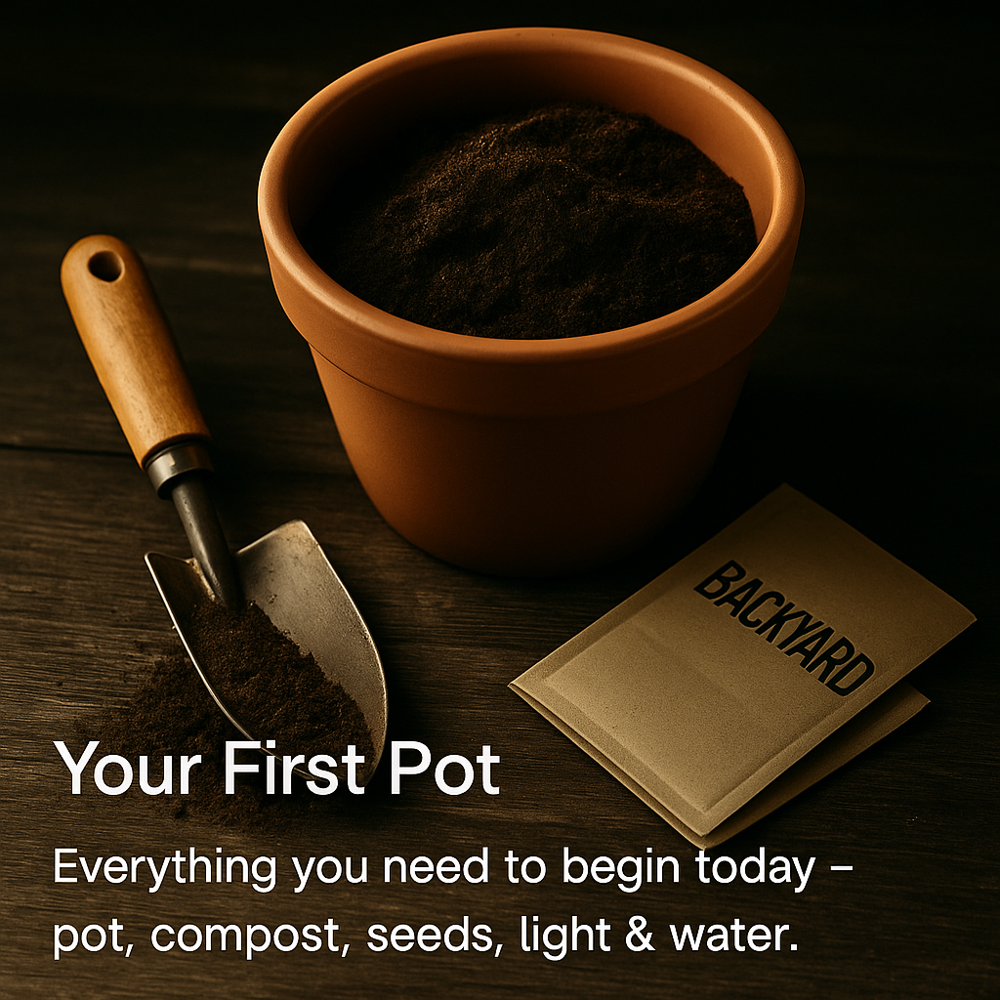
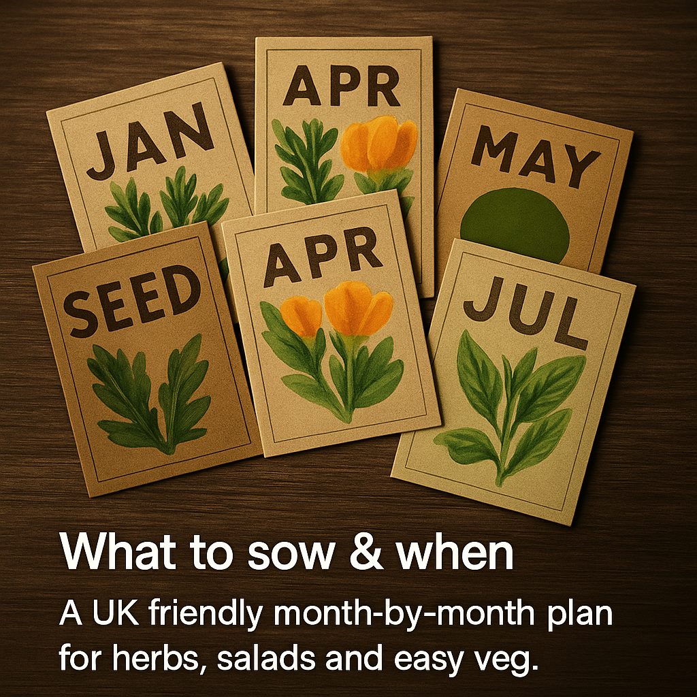
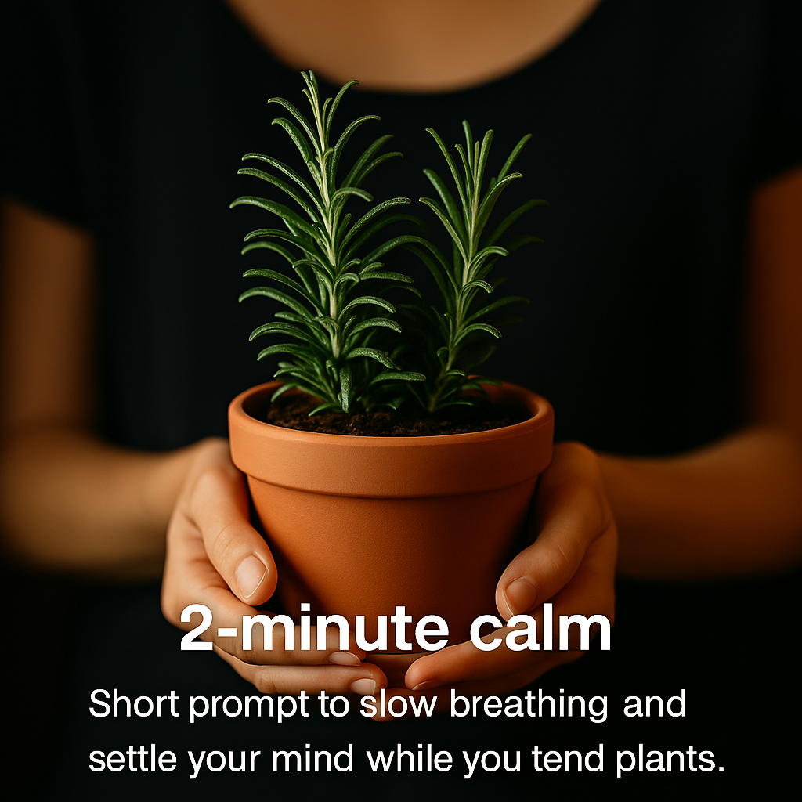

Step-by-step support to get you started with growing, sowing, and mindfulness.

Your First Pot — container choice, drainage, compost, watering.

What to Sow & When — UK-friendly month-by-month plan.

2-Minute Calm — short prompts to steady your breathing.